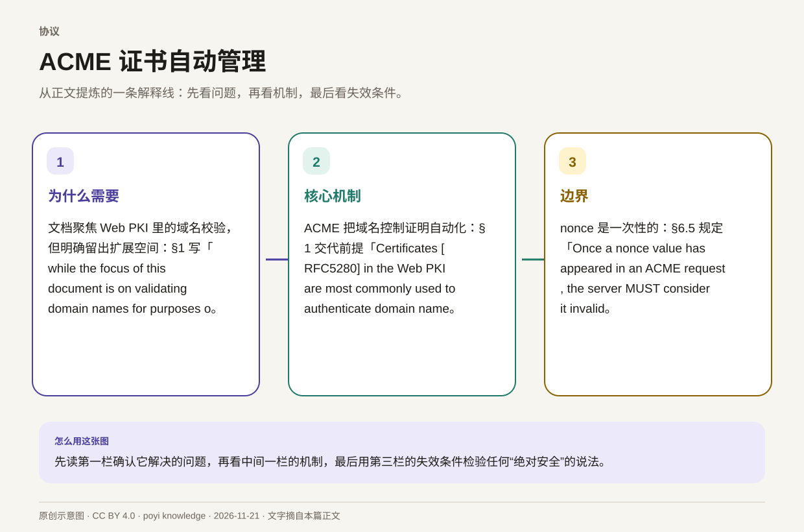
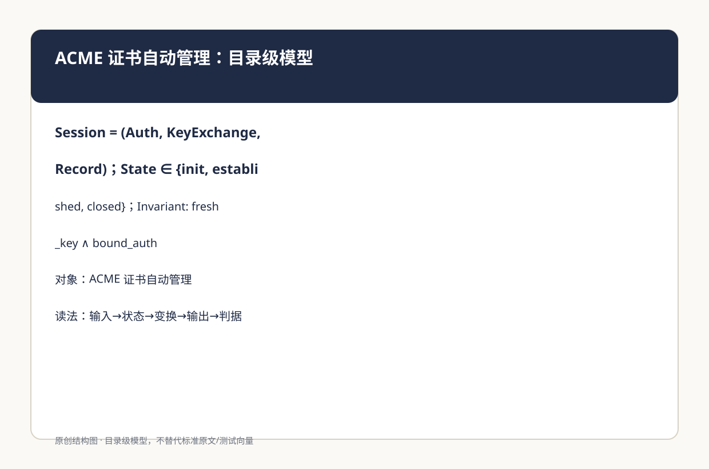

原理与机制
协议：ACME 证书自动管理（Automatic Certificate Management Environment）。ACME 把域名控制证明自动化：§1 交代前提「Certificates [RFC5280] in the Web PKI are most commonly used to authenticate domain names.」摘要批评现状「As of this writing, this verification is done through a collection of ad hoc mechanisms.」§4 说明载体：「ACME allows a client to request certificate management actions using a set of JavaScript Object Notation (JSON) messages [RFC8259] carried over HTTPS [RFC2818].」§6.2 规定请求认证：「All ACME requests with a non-empty body MUST encapsulate their payload in a JSON Web Signature (JWS) [RFC7515] object」且「The server MUST verify the JWS before processing the request.」

为什么重要
文档聚焦 Web PKI 里的域名校验，但明确留出扩展空间：§1 写「while the focus of this document is on validating domain names for purposes of issuing certificates in the Web PKI, ACME supports extensions for uses with other identifiers in other PKI contexts.」对 DV 证书而言，§1 写明「The only validation the CA is required to perform in the DV issuance process is to verify that the requester has effective control of the domain」并补充「The CA is not required to attempt to verify the requester's real-world identity.」§2 解释为什么这能全自动：DV 校验检查的是签发方可在线观察的属性，因此「all steps in the request, verification, and issuance process can be represented and performed by Internet protocols with no out-of-band human intervention.」
应用与实例
授权流程确认两件事，§7.5 列为「That the client controls the private key of the account key pair」与「That the client controls the identifier in question.」授权对象状态在 §7.1.4 枚举：「Possible values are “pending”, “valid”, “invalid”, “deactivated”, “expired”, and “revoked”.」§8.3 的 http-01 挑战要求「With HTTP validation, the client in an ACME transaction proves its control over a domain name by proving that it can provision HTTP resources on a server accessible under that domain name.」并解释为何走明文端口——「the challenge must be completed over HTTP, not HTTPS.」§8.4 的 dns-01 则「prove control of that domain by provisioning a TXT resource record containing a designated value for a specific validation domain name.」§6.5 定义防重放：「ACME POST requests have a mandatory anti-replay mechanism.」撤销也走同一通道，§7.6 写明「To request that a certificate be revoked, the client sends a POST request to the ACME server's revokeCert URL.」并指出它与其他请求不同：「Revocation requests are different from other ACME requests in that they can be signed with either an account key pair or the key pair in the certificate.」

边界与攻击面
nonce 是一次性的：§6.5 规定「Once a nonce value has appeared in an ACME request, the server MUST consider it invalid, in the same way as a value it had never issued.」令牌必须有足够熵，§8.3 要求「This value MUST have at least 128 bits of entropy.」§11.3 解释两个目的，其中之一是让未被逐条配置的朴素校验服务器难以实现。§10.4 记录服务端请求伪造：校验用的 GET「This request is made before the server has verified that the client controls the domain, so any client can cause a query to any domain.」并且攻击者可借重定向扩大影响——「then they can send the server an HTTP redirect (e.g., a 302 response) which will cause the server to query an arbitrary URL.」§10.3 也承认这类出站连接代价与风险，§6.6 用速率限制兜底：「Creation of resources can be rate limited by ACME servers to ensure fair usage and prevent abuse.」
历史与背景
RFC 8555 署名 R.Barnes（Cisco）、J.Hoffman-Andrews（EFF）、D.McCarney（Let's Encrypt）与 J.Kasten（University of Michigan），2019 年 3 月发布，Category: Standards Track，头部无 Obsoletes 行。§1 描述它要替代的现状：「Existing Web PKI certification authorities tend to use a set of ad hoc protocols for certificate issuance and identity verification.」§2 交代此前的部署体验：「Prior to ACME, when deploying an HTTPS server, a server operator typically gets a prompt to generate a self-signed certificate.」
逐步示例与核验
形式模型与复算步骤
[\mathrm{Adv}^{\Pi}_A(\lambda)\le n\cdot\mathrm{Adv}^{\mathrm{prf}}F(\lambda)+\varepsilon{\mathrm{aead}}(\lambda)]
ACME 证书自动管理的公开参数、密钥/随机数与消息；变量说明：Π 协议，A 敌手，n 会话数，PRF/AEAD 为底层原语。1.把协议消息序列写成状态机。2.用混合论证逐个替换原语。3.把剩余优势归约到 PRF/AEAD 安全。边界：公式只覆盖已登记的参数与假设；参数取值、标准版本和实现细节仍以来源为准。
参考出处
- Wikipedia search entry for ACME 证书自动管理. https://zh.wikipedia.org/w/index.php?search=ACME%20%E8%AF%81%E4%B9%A6%E8%87%AA%E5%8A%A8%E7%AE%A1%E7%90%86
- Handbook of Applied Cryptography (Menezes, van Oorschot, Vanstone). https://www.cacr.math.uwaterloo.ca/hac/
- RFC 8555: Automatic Certificate Management Environment. https://www.rfc-editor.org/rfc/rfc8555
- Published standard/RFC for ACME 证书自动管理. https://www.rfc-editor.org/rfc/rfc8555